정보통신기사(구) (2004-03-07 기출문제)
1과목: 디지털 전자회로
1. 다음 그림과 같은 회로의 전달 특성은? ( 단,VR1 ＜ VR2 )
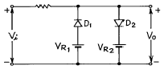
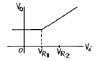
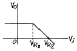
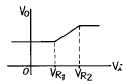
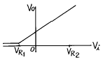
(정답률: 알수없음)

2. 필터법을 이용하여 DSB 파에서 SSB 파를 얻어내려면 어떤 종류의 필터를 사용해야 하는가?
- 저역필터(LPF)
- 전대역필터(APF)
- 고역필터(HPF)
- 대역필터(BPF)
(정답률: 알수없음)
3. 다음 연산회로에서 전압이득(
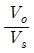
)은?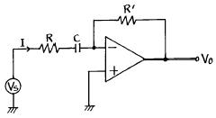
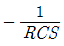
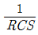
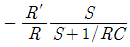
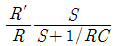
(정답률: 알수없음)
4. 디지털데이터를 디지털신호로 전송하는 회로 장치는?
- CODEC
- 변.복조회로
- DSU
- 전화
(정답률: 알수없음)
5. 그림은 무슨 회로인가 ?
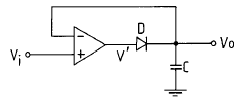
- Voltage follower
- Differentiator
- Peak detector
- Integrator
(정답률: 알수없음)
6. 아래의 연산 증폭회로에서 입출력 관계가 옳은 것은?
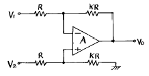
- Vo = K(V2 - V1)
- Vo = KV2 - (K + 1)V1
- Vo = (K + 1)V2 - KV1
- Vo = (K + 1)(V2 - V1)
(정답률: 알수없음)
7. 30:1의 리플계수기를 만들려면 최소한 몇 개의 플립-플롭(filp-flop)이 필요한가?
- 5개
- 10개
- 15개
- 30개
(정답률: 알수없음)
8. 에미터 접지 트랜지스터 증폭회로에서 에미터에 접속된 저항과 병렬로 연결된 콘덴서를 제거 했을 때 증폭기의 상태는 어떻게 되겠는가?
- 변화가 없다.
- 과전류가 흘러 트랜지스터가 파괴된다.
- 부궤환이 걸려 이득이 작아진다.
- 정궤환이 걸려 발진한다.
(정답률: 알수없음)
9. 변조도 60 %의 AM에 있어서 반송파의 평균 전력이 100W일 때 피변조파의 평균 전력은?
- 118 W
- 130 W
- 136 W
- 160 W
(정답률: 알수없음)
10. L, C, R 직렬회로의 공진주파수에 대한 Q의 값은? (단, W 는 각속도)
- L/CR
- WL/R
- R/WC
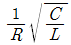
(정답률: 알수없음)
11. NAND 게이트로 구성된 SR 플립플롭에서 전의 상태를 유지하기 위해서는 SR이 어떤 경우일 때 인가?
- SR = 00일 때
- SR = 01일 때
- SR = 10일 때
- SR = 11일 때
(정답률: 알수없음)
12. 저 임피이던스 부하에서 고전류이득을 얻으려할 때 사용되는 증폭 방식은?
- 베이스 접지
- 에미터 팔로워
- 에미터 접지
- 캐스코우드 증폭기
(정답률: 알수없음)
13. 다음 J-K Flip-Flop의 입력신호의 주파수가 5[㎒]일 때 출력신호의 주파수는?
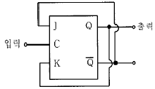
- 500[㎑]
- 2.5[㎒]
- 10[㎒]
- 25[㎒]
(정답률: 알수없음)
14. 다음 3변수 카르노도가 나타내는 함수는?
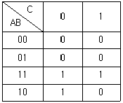
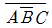
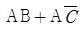
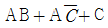
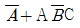
(정답률: 알수없음)
15. 다음의 회로에서 출력 Vo는?
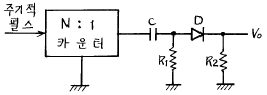
- 양(+)의 펄스
- 음(-)의 펄스
- 대칭 펄스
- 반파 대칭 펄스
(정답률: 알수없음)
16. 이득이 40[㏈]인 저주파 증폭기가 10[%]의 왜율을 가지고 있을 때 이것을 1[%]로 개선하기 위해서는 대략 얼마의 전압 부궤환을 걸어 주어야 하는가?
- 60[㏈]
- 40[㏈]
- 30[㏈]
- 20[㏈]
(정답률: 알수없음)
17. 그림의 회로에서 V1=3V, Rf=450㏀, R1=150㏀ 일 때, 출력전압 Vo는?
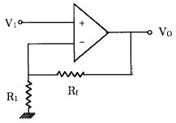
- 1〔V〕
- 12〔V〕
- 15〔V〕
- 18〔V〕
(정답률: 알수없음)
18. 전압안정화 회로의 특성으로 가장 알맞는 것은?
- 온도가 변할 때 출력전압은 일정하다.
- 출력전압이 변할 때 부하전류는 일정하다.
- 입력전압이 변할 때 출력전압은 일정하다.
- 부하가 변할 때 출력전압은 일정하다.
(정답률: 알수없음)
19. 2n개의 입력신호 중 1개를 선택하여 출력하는 기능을 가진 회로는?
- Encoder
- Decoder
- Mux
- Demux
(정답률: 알수없음)
20. 다음 회로가 나타내는 전달특성은? (단, D는 이상적인 다이오드 이다.)
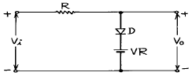
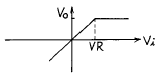
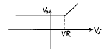
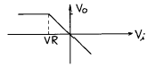
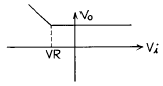
(정답률: 알수없음)
2과목: 정보통신 시스템
21. ISDN에 의한 서비스 중 베어러(bearer)서비스의 전송 속도중 적합하지 않은 것은?
- 64 Kbps 디지털 서비스 (B CH)
- 384 Kbps 디지털 서비스 (Ho CH)
- 1,536 Kbps 디지털 서비스 (H11 CH)
- 2,048 Kbps 디지털 서비스 (H12 CH)
(정답률: 알수없음)
22. 패킷 교환방식(packet switching)중 틀리는 것은?
- 트래픽 용량이 큰 경우에 유리하다.
- 축적 교환방식의 일종이다.
- 데이터 단위의 길이가 제한된다.
- 대체 경로를 선택할 수 있으나, 네트워크의 신뢰성이 낮다.
(정답률: 알수없음)
23. 데이터 통신을 위한 데이터 교환회선을 구성하는데 있어서 고속의 디지탈 데이터 전용회선을 설명하는 것은?
- 기존의 음성을 위한 네트워크의 교환기를 이용한다.
- 저속의 간단한 응용에 효과적이다.
- 융통성이 적고 에러율이 높다.
- 시분할 다중화(Time-division multiplex)된 디지탈전송로를 이용한다.
(정답률: 알수없음)
24. 계층화된 통신구조를 통한 데이타전송시 상위계층에서 하위계층으로 데이타를 전달할 때 필요한 제어정보(Header/Trailer)를 덧붙이는 과정은?
- Fragmentation
- Reassembly
- Encapsulation
- Packetization
(정답률: 알수없음)
25. 아날로그 가입자회로(교환기 주변 정합장치)가 가져야 하는 기본 기능이 아닌 것은 ?
- 급전(Battery feed)
- 2선/4선 변환(Hybrid)
- 과전압보호(Overvoltage protection)
- 멀티플렉서/디멀티플렉서(Multi/De-Multiplexer)
(정답률: 알수없음)
26. SSB 통신방식의 잇점과 가장 거리가 먼 것은?
- 주파수 안정도가 낮아도 양질의 통신이 가능하다.
- 작은 전력으로 양질의 통신이 가능하다.
- 비화성을 유지할 수 있다.
- DSB에 비해 3dB의 S/N비가 개선된다.
(정답률: 알수없음)
27. 다음에 열거한 엑세스 제어방식과 이에 관련된 제품기술 중 관계가 없는 것은?
- Token Bus - MAP
- Polling - PBX
- Token Ring - FDDI
- CSMA/CD - Ethernet
(정답률: 알수없음)
28. Shannon의 채널 용량식은? (W:대역폭, C:채널용량, S:신호전력, N:잡음전력)
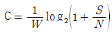
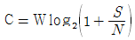
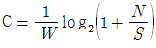
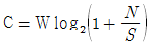
(정답률: 알수없음)
29. ATM통신은 셀(cell) 단위로 통신이 이루어지는데, 셀은 몇 바이트로 구성되는가?
- 가변
- 48
- 50
- 53
(정답률: 알수없음)
30. 가상회선과 데이터그램에 의한 패킷교환에 대한 설명으로 맞지 않는 것은?
- 가상회선의 라우팅 테이블은 노드가 가상회선 번호를 어떻게 변경하여야 하는가를 규정한다.
- 가상회선전송시 동일한 접속에 속한 모든 패킷들이 각각 다른 경로를 선택할 수도 있다.
- 데이타그램의 라우팅테이블은 노드가 랜덤하게 또는 주기적 순서에 따라 선택할 수 있는 경로를 규정한다.
- 데이타그램 전송시 망은 각각의 패킷에 대해 다른 경로를 선택하도록 할 수도 있다.
(정답률: 알수없음)
31. 어느 도시와 그 주변도시에 약 80개의 전화국이 있다. 이들 전화국을 전부 델타(delta)망으로 연결하려면 몇 회선의 국간중계회선이 필요한가?
- 936 회선
- 1414 회선
- 2106 회선
- 3160 회선
(정답률: 알수없음)
32. 인트라넷(intranet)을 운용할 때 외부의 허가를 받지 않은 사람이 무단으로 네트워크 내부로 들어오는 것을 방지하는 장치는?
- 방화벽(firewall)
- 라우터(router)
- 패드(pad)
- 인트라넷 서버(intranet server)
(정답률: 알수없음)
33. 국내에서 개발한 TDX 교환시스템의 제어방식은?
- 공통제어방식
- 자동제어방식
- 분산제어방식
- 원격제어방식
(정답률: 알수없음)
34. OSI 모델에서 계층구조상 기본구성요소가 아닌 것은?
- 실체(Entity)
- 접속(Connection)
- 데이터단위(Data Unit)
- 타이밍(Timing)
(정답률: 알수없음)
35. 망관리(network management)기능의 대상이 아닌 것은?
- 시스템 오류(fault)
- 성능(performance)
- 신호 프로토콜 처리
- 망 구성(configuration)
(정답률: 알수없음)
36. 음성, 비음성의 다양한 통신 서비스를 하나의 통신망으로 종합적으로 제공하는 통신 시스템은 ?
- TCP/IP망
- PSTN
- PSDN
- ISDN
(정답률: 알수없음)
37. 패킷교환망에서 우수한 라우팅 알고리즘이 갖추어야 될 성질로서 가장 거리가 먼 것은?
- 최적의 패킷 전송시간
- 자원할당의 공정성
- 라우팅 결정의 안정성
- 라우팅 경로의 이중성확보
(정답률: 알수없음)
38. ISO의 OSI 7계층 참조모델에서 동기화, 에러제어, 흐름제어 등의 기능을 수행하여 물리적 링크(physical link)간에 원활한 데이타의 전송이 이루어질 수 있도록 제공하는 계층은?
- 물리층
- 데이타 링크층
- 네트워크층
- 트랜스포트층
(정답률: 알수없음)
39. 4[kHz]까지의 음성신호를 완전히 재생시키기 위한 표본화 주기는 몇 [㎲]인가?
- 250
- 200
- 125
- 100
(정답률: 알수없음)
40. 전기통신망에서 이상 트래픽이 발생할 경우 트래픽의 규제방법에 해당하는 것은?
- 발신 규제
- 통화중인 가입자의 규제
- 착신 규제
- 운용기능의 규제
(정답률: 알수없음)
3과목: 정보통신 기기
41. 비디오텍스 통신시스템에서 그림정보를 작성하여 정보축적장치에 입력하기 위한 그림 변환방식이 아닌 것은?
- 포토 그래픽 방식
- 지오메트릭 방식
- 모자이크 방식
- 스프릿 스크린 방식
(정답률: 알수없음)
42. 전화기의 송화기와 밀접한 관계가 있는 것은?
- 진동판과 영구자석
- 진동판과 콘덴서
- 진동판과 탄소입자
- 진동판과 후크스위치
(정답률: 알수없음)
43. 통신회선을 직접 보유하거나 통신사업자의 회선을 임차 또는 이용하여 단순한 전송기능 이상에 해당하는 정보의 축적, 가공, 변환처리 등을 하는 복합적인 정보통신 서비스는 무엇인가?
- Videotex
- VAN
- ISDN
- LAN
(정답률: 알수없음)
44. 컴퓨터가 단말기에게 전송할 데이타가 있는가를 확인하는 방법은?
- Selection
- Addressing
- Polling
- Link
(정답률: 알수없음)
45. 주파수 분할 다중화에서 부채널간의 상호간섭을 방지하기 위한 완충지역은 어느 것인가?
- guard band
- guard time
- channel
- sub group
(정답률: 알수없음)
46. 통신제어장치의 기능에 대해 가장 적합한 설명은?
- 통신회선상에서 물리적 오류제어 및 데이터 분석
- 중앙처리장치와 데이터전송회선간 데이터송수신제어
- 통신회선의 주파수, 위상 등 특성제어
- 메모리장치의 데이터 버스 제어
(정답률: 알수없음)
47. ISDN의 텔레 서비스에서 제공되지 않은 서비스는?
- 가상 호 (Virtual Call)
- 메시지 통신
- 비디오 텍스
- 파일 전송
(정답률: 알수없음)
48. 저소음 및 도트의 세밀성이 기대되는 논임팩트(비충격식) 프린터 방식이 아닌 것은?
- 열기록방식
- 잉크인젝트방식
- 직렬매트릭스방식
- 전자사진기록방식
(정답률: 알수없음)
49. 다음 중 디지털 전송장비의 클럭(clock) 공급방식이 아닌 것은?
- 자체 클럭 공급방식
- 수신 클럭 공급방식
- 외부 클럭 공급방식
- 제어 클럭 공급방식
(정답률: 알수없음)
50. 다음 중 위성통신 시스템에서 위성중계기의 신호 증폭부가 갖추어야 할 조건이 아닌 것은?
- 높은 신뢰성
- 우수한 효율
- 경량화
- 협대역
(정답률: 알수없음)
51. 은행, 백화점, 댐, 하역장, 공장 및 사람이 접근할 수 없는 산업현장 등을 감시하는데 가장 적합한 것은?
- CATV
- VRS
- HDTV
- CCTV
(정답률: 알수없음)
52. 다음중 정보단말기의 기본구성요소가 아닌 것은?
- 입력장치부
- 회선접속부
- 회선제어부
- 변복조기
(정답률: 알수없음)
53. 송신출력전력이 같은 경우 복조 S/N(신호/잡음)비가 가장 큰 것은?
- 진폭변조방식
- 잔류측대파방식
- 주파수변조방식
- 단측대파방식
(정답률: 알수없음)
54. 부가가치통신의 통신처리기능이 아닌 것은?
- 패킷교환 및 회선교환기능
- 동보통신기능
- 전자사서함기능
- 속도변환기능
(정답률: 50%)
55. 전자 교환기에서 통화로망과 관련하여 중앙제어장치의 명령에 따라 통화로를 완성하고 감시하는 통화 단말회로는?
- 주사장치
- 통화로 제어장치
- 트렁크 및 정터회로
- 신호분배장치
(정답률: 알수없음)
56. 텔레텍스트의 미디어 기본특성이 아닌 것은? (비디오텍스와 비교)
- 쌍방향 통신
- 축적정보량이 적음
- 다수 수신자가 동시접속
- 단방향 동시분배
(정답률: 알수없음)
57. 실제로 송신할 데이타가 있는 단말에게만 동적인 방식으로 각 부채널(Sub-Channel)에 Time-Slot을 할당해 주는 다중화 방식은?
- PCM
- FDM
- Inverse Mux
- STDM
(정답률: 알수없음)
58. 데이터 통신에서 10개의 스테이션을 점대점(1:1)으로 직접 연결한다면 몇 개의 전송링크가 필요한가?
- 4개
- 10개
- 20개
- 45개
(정답률: 알수없음)
59. 다음중 위성에 장착하는 안테나와 가장 거리가 먼 것은?
- 파라볼라 안테나
- 혼 안테나
- 카세그레인 안테나
- 헤리컬 안테나
(정답률: 알수없음)
60. 전파전파의 경로상 여러 요소의 영향 때문에, 수신전계강도에 시간적 강약의 변동이 발생하는 페이딩 중에서 대류권파의 페이딩에 해당하는 것은?
- 편파성 페이딩
- 흡수성 페이딩
- 도약(Skip) 페이딩
- 신틸레이션 페이딩
(정답률: 알수없음)
4과목: 정보전송 공학
61. 광섬유케이블 심선에 있어서 core의 굴절률을 점차 높이면(증가시키면) 통화용 레이저광선의 전파 속도는 어떻게 변화되는가?
- 점차 빨라진다.
- 점차 늦어진다.
- 전혀 불변이다.
- 주기적으로 빨라졌다 늦어졌다 한다.
(정답률: 알수없음)
62. 휴대용 무선기기에서 주로 쓰이는 통신 방식으로서 양쪽방향으로 통신은 가능하나, 동시에 양쪽으로의 전송은 되지 않는 통신 방식은?
- 단방향 통신
- 전이중 통신
- 다중 통신
- 반이중 통신
(정답률: 알수없음)
63. 다음은 여러가지 동축케이블의 종류들이다.가장 광대역특성을 가지는 동축케이블은?
- P-1M
- P-4M
- C-60M
- C-120M
(정답률: 알수없음)
64. 비동기 매체 엑세스 제어 기술에 해당하지 않는 것은?
- 라운드 로빈 방식
- 예약방식
- 경쟁방식
- 핸드쉐이크 방식
(정답률: 알수없음)
65. 송신 신호의 전력(분산)을 S ,주파수 대역폭 W인 신호를 통과시켰을 때 전력(분산) N인 백색 가우스 잡음을 발생하는 통신로의 용량에 관하여 바르게 설명한 것은?
- 통신로 용량을 크게하려면 신호전력 S2 에 비례하므로 S 의 값을 증가시키는 것이 효과적이다.
- 대역폭을 크게하는 것 보다 잡음 전력을 감소 시키는 것이 통신로 용량을 지수적으로 증가 시킨다.
- 대역폭을 K배함과 SN비를 K승 함은 정보 전송량인 점에서 등가이다.
- SN비를 크게하므로서 통신로 용량을 shannon 한계보다 크게할 수 있다.
(정답률: 알수없음)
66. 코드들 사이의 최소거리(minimum distance)가 3일때, 다음 설명 중 맞는 것은?
- 에러 1개를 수정하거나, 또는 에러 2개를 검출할 수 있다.
- 에러 1개를 수정하고, 에러 2개를 검출할 수 있다.
- 에러 2개를 수정하거나, 또는 에러 3개를 검출할 수 있다.
- 에러 2개를 수정하고, 에러 3개를 검출할 수 있다.
(정답률: 알수없음)
67. 표본화 정리(sampling theorem)에 의하면 주파수 대역이 300 ∼ 3400[㎐]인 전화의 경우 다음 어느 시간마다 표본화하면 완전히 정보를 전송할수 있는가?
- 1/300초
- 1/3400초
- 1/6800초
- 1/2000초
(정답률: 알수없음)
68. HDLC에서 프레임 체크 시퀀스로 가장 적합한 부호는?
- CRC
- Hamming
- Gray
- ASCII
(정답률: 알수없음)
69. 아날로그 전송로에 의한 디지털 데이타 전송에 관하여 설명한 것이다. 틀린 것은?
- 디지털 신호를 그대로 전송하는 베이스벤드(base band)전송을 할 수 있다.
- 디지털 신호를 아날로그 형태의 신호로 변환하여 전송하는 대역전송을 할 수 있다.
- 고속으로 디지털 데이타 신호를 전송하는 경우에는 다치(多値)변조를 사용한다.
- 전화망을 디지털 데이타 전송에 사용할 수는 있으나 변복조 방식은 사용하지 않는다.
(정답률: 알수없음)
70. 출현확률이 큰 신호계열에 짧은 부호를 출현확률이 적은 신호 계열에 긴 부호를 할당하여 송신 부호를 할당하는 부호화법은 어느 것인가?
- 예측 부호화
- 직교변환 부호화
- 런렝스 부호화
- 허프만 부호화
(정답률: 알수없음)
71. 다음중 HDLC 제어영역의 프레임 종류가 아닌 것은?
- 정보 프레임
- 비번호 프레임
- 감독 프레임
- 접속 프레임
(정답률: 알수없음)
72. 전송제어 절차의 5단계를 데이타전송을 위한 동작순서로 바르게 나열한 것은?
- 통신회선접속-링크설정-정보메세지전송-링크종결-통신회선의 절단
- 링크설정-통신회선접속-정보메세지전송-통신회선의 절단-링크종결
- 링크설정-통신회선접속-정보메세지전송-링크종결-통신회선의 절단
- 통신회선접속-링크설정-링크종결-정보메세지 전송-통신회선의 절단
(정답률: 알수없음)
73. Bandpass 전송방식에 대한 설명이 아닌 것은?
- 단말로부터 데이터 신호를 모뎀을 이용하여 변조 후 전송하는 방식이다.
- 10∼100bps 저속데이터 전송 방식으로 이용한다
- 저속데이타 전송을 위한 변조방식은 FSK를 사용한다
- 고속데이타를 전송하는 경우 동기식 전송을 한다.
(정답률: 알수없음)
74. 어떤 광케이블의 감쇠가 10[dB/Km]일때 이 광케이블에 1[W]의 전력을 송신했다면 1[Km]떨어진 수신점에서의 광전력은 얼마나 되겠는가?
- 0.1[W]
- 0.2[W]
- 0.5[W]
- 0.9[W]
(정답률: 알수없음)
75. 펄스부호변조(PCM)전송에서 음성 1채널의 대역폭을 4[㎑]로 잡았다. 이 대역폭의 2배로 표본화(sampling)하고 8비트(bit)로 인코드(Encode)했을 경우의 음성 1채널의 비트레이트(bit rate)와 음성 24채널을 시분할 다중화시켰을 경우의 최종 비트 레이트(bit rate)는 어느 것인가?
- 4[Kb/sec],96[Kb/sec]
- 16[Kb/sec],384[Kb/sec]
- 32[Kb/sec],788[Kb/sec]
- 64[Kb/sec],1544[Kb/sec]
(정답률: 알수없음)
76. 전송부호가 갖추어야 할 조건에 해당하지 않는 것은?
- 전송대역폭이 좁아야 한다
- 제작이 쉬워야 한다
- 동기 재생이 어려워야 한다.
- 직류 성분이 없어야 한다.
(정답률: 알수없음)
77. HDLC(HIGH LEVEL DATA LINK CONTROL) SEQUENCE는?
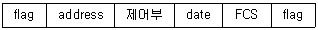
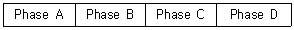
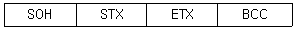
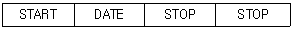
(정답률: 알수없음)
78. 오류제어 방식 중 ARQ방식의 장점이 아닌 것은?
- 신뢰도가 높다.
- 예상되지 않은 오류에 대해서도 강하다.
- 복호기가 간단하다.
- 귀환통신로를 사용한다.
(정답률: 알수없음)
79. 아나로그 신호 중계기의 부궤환 증폭기의 주요 기능이 아닌 것은 ?
- 전송선로의 손실 보상과 등화
- 중계기 장애 감시
- 중계기의 전력공급
- 유도잡음 제거
(정답률: 10%)
80. 디지탈 데이타를 전송하는 방법중 아나로그 전송방식이 아닌 것은?
- NRZ(Non Return to Zero)
- FSK(Frequeucy Shift Keying)
- PSK(Phase Shift Keying)
- QAM(Quadrature Amplitude Modulation)
(정답률: 알수없음)
5과목: 전자계산기일반 및 정보통신설비기준
81. 인터럽트 발생원인이 아닌 것은?
- 정전
- 조작자의 의도적인 조작
- 0으로 나누었을 때
- 임의의 부프로그램에 대한 호출
(정답률: 알수없음)
82. 다음 중 음의 정수를 연산하기 가장 쉬운 것부터 나열한 것은?
- 부호와 절대치 → 1의 보수 → 2의 보수
- 부호와 절대치 → 2의 보수 → 1의 보수
- 1의 보수 → 2의 보수 → 부호와 절대치
- 2의 보수 → 1의 보수 → 부호와 절대치
(정답률: 알수없음)
83. 전기통신설비는 전력유도 방지에 대한 조치를 강구하여야 한다. 통신기기 오동작 유도종전압의 제한치는 얼마인가?
- 5[V]
- 10[V]
- 15[V]
- 20[V]
(정답률: 알수없음)
84. 다음 중 중앙처리장치(CPU)의 동작속도에 가장 큰 영향을 미치는 것은?
- 레지스터의 종류
- 프로그램 카운터길이
- 외부버스의 길이
- 클럭주파수
(정답률: 알수없음)
85. 컴퓨터의 메모리 크기 단위 중에서 가장 큰 것은?
- KB
- MB
- GB
- TB
(정답률: 알수없음)
86. 전기통신사업이나 공사업을 경영하고자 하는자는 관련법령이 정하는 바에 따라 정보통신부장관의 행정절차를 거처야 한다. 다음 중 그 절차가 틀리는 것은?
- 기간통신사업-허가
- 별정통신사업-등록
- 부가통신사업-인가
- 정보통신공사업-등록
(정답률: 알수없음)
87. 다음 debugging과 관계가 적은 것은?
- coding
- single step
- trace
- dump
(정답률: 알수없음)
88. 다음 각 자료형 중에서 가장 적은 비트의 수를 필요로 하는 것은?
- 실수형 자료(real type)
- 정수형 자료(integer type)
- 문자형 자료(character type)
- 논리형 자료(boolean type)
(정답률: 알수없음)
89. 전기통신에 관한 기본계획은 누가 수립하여 공고하는가?
- 과학기술부장관
- 한국통신사장
- 정보통신부장관
- 통신정책위원회위원장
(정답률: 알수없음)
90. 정보통신부장관은 전기통신기술의 진흥을 위하여 그에 대한 시행계획을 수립하는 바 다음 사항 중 포함되지 않아도 되는 것은?
- 전기통신기술의 연구 개발에 관한 사항
- 전기통신기술의 산업화 촉진에 관한 사항
- 전기통신 기술연구 단체의 육성에 관한 사항
- 전기통신기술의 국제협력에 관한 사항
(정답률: 알수없음)
91. 정보화추진위원회에 관한 설명으로 적합하지 않은 것은?
- 프로그램 저작권의 보호와 관련된 정책 심의
- 위원장은 국무총리임
- 국무총리 소속하에 설치된 기구임
- 위원회의 효율적인 운영을 위하여 정보화추진실무위원회를 둔다.
(정답률: 알수없음)
92. 전기통신설비의 기술기준은 어느 법령에 근거를 두고 제정하는가?
- 정보화촉진기본법
- 전기통신기본법
- 정보통신공사업법
- 전기통신사업법
(정답률: 알수없음)
93. 정부는 정보화촉진등을 위하여 몇 년의 기간을 단위로 하는 정보화촉진기본계획을 수립하여야 하는가?
- 1년
- 3년
- 5년
- 7년
(정답률: 알수없음)
94. 정보통신공사 발주자로부터 공사를 도급받은 공사업자를 무엇이라고 말하는가?
- 수급인
- 도급인
- 용역업자
- 하도급인
(정답률: 알수없음)
95. 프로그램 카운터와 명령의 주소부분을 더해 유효 주소로 결정하는 주소지정방식은?
- Base Addressing
- Index Addressing
- Immediate Addressing
- Relative Addressing
(정답률: 알수없음)
96. 인터럽트 발생시 프로그램의 복귀 번지를 저장하는 것은?
- Stack
- Queue
- Deque
- PC
(정답률: 알수없음)
97. 전기통신설비의 통합운용에 관한 내용으로 관련이 없는 것은 ?
- 전기통신설비의 효율적인 관리.운영을 위하여 필요한 경우에 한한다.
- 별정통신사업자로 하여금 통합운영하게 할 수 있다.
- 통합운용계획은 관계 행정기관의 장과 협의한 후 국무회의를 거쳐 대통령의 승인을 얻어야 한다.
- 전기통신설비뿐만 아니라 그에 부속된 토지.건물 기타 구축물도 포함된다.
(정답률: 알수없음)
98. CPU에서 논리연산 또는 산술연산을 행하였을 때 그 결과의 상태(Status)를 나타내는 레지스터는?
- 인덱스 레지스터
- 상태 레지스터
- 명령 레지스터
- 스택 포인터
(정답률: 알수없음)
99. 기간통신사업자가 전기통신역무에 관한 요금, 기타 이용조건을 정하여 정보통신부장관의 인가를 받은 것을 무엇이라 하는가?
- 시행규정
- 이용약관
- 시설기준
- 시행규칙
(정답률: 알수없음)
100. 다음 중에서 8비트로 1의 보수 표현 방법에 의하여 +10과 -10을 올바르게 표현한 것은 어느 것인가?
- +10 : 00001010, -10 : 11110101
- +10 : 00001010, -10 : 11111010
- +10 : 10001010, -10 : 11110101
- +10 : 10001010, -10 : 11111010
(정답률: 알수없음)